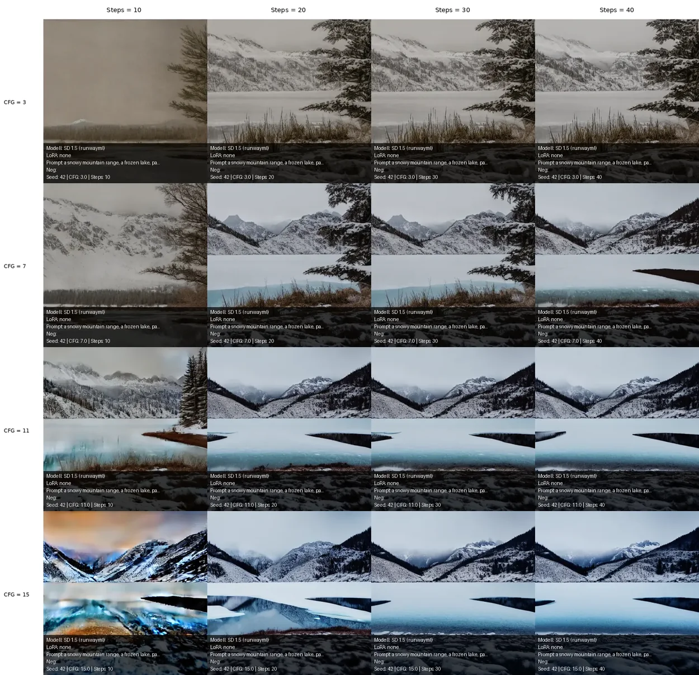
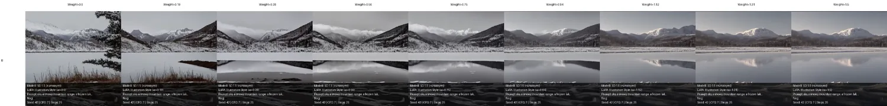
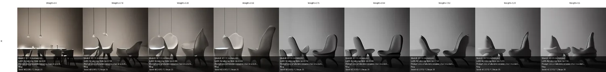
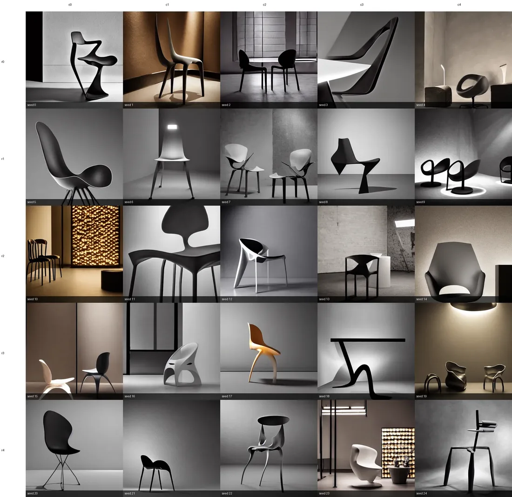
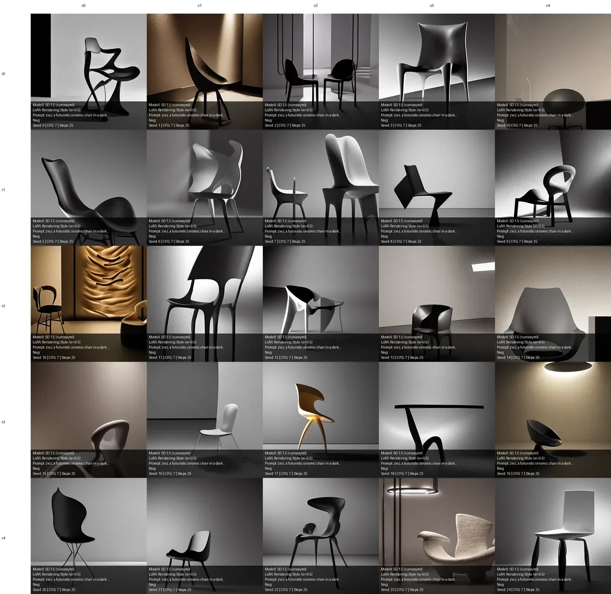
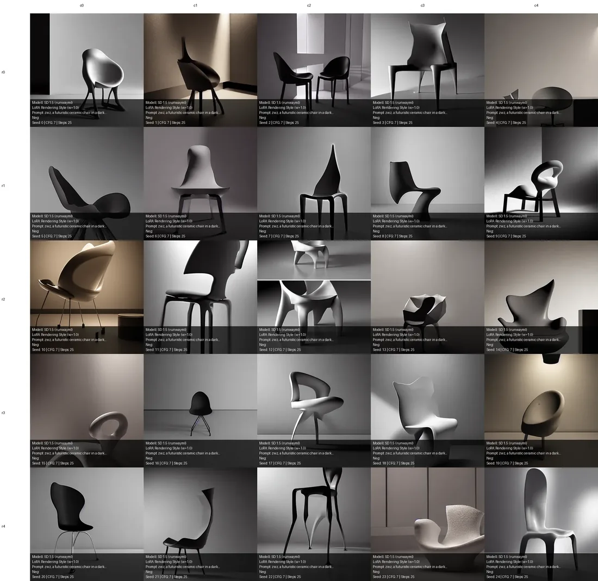
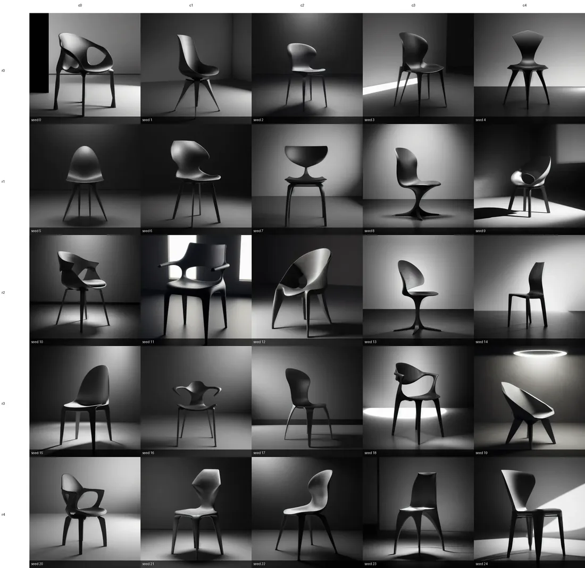
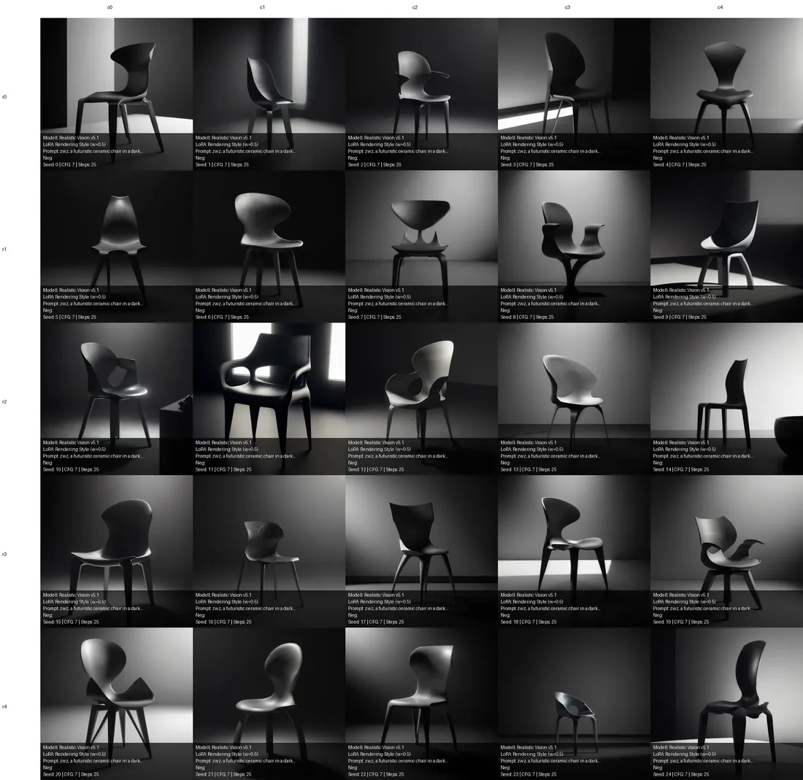
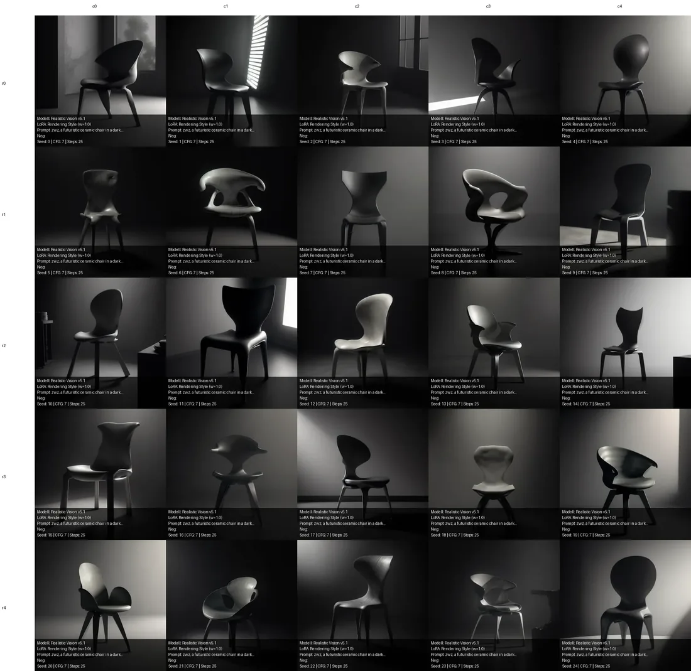

Generator
Zwei SD-1.5-Checkpoints, zwei eigene LoRAs, reproduzierbare Seeds und vollständige Metadaten.
Creative Coding Advanced · Semesterprojekt
Eine benutzerorientierte Webanwendung zum Generieren, Vergleichen und Verstehen von Bildern mit Stable Diffusion 1.5.
Latent Studio verbindet einen praktischen Bildgenerator mit einem Lern- und Vergleichswerkzeug. Einsteiger:innen erhalten verständliche Defaults und Erklärungen; erfahrene Nutzer:innen können Parameterreihen und LoRA-Tests ohne Code erzeugen.
Zwei SD-1.5-Checkpoints, zwei eigene LoRAs, reproduzierbare Seeds und vollständige Metadaten.
Automatische CFG-×-Steps-Grids, LoRA-Weight-Sweeps und kontrollierte Seed-Vergleiche.
Eine gezeichnete Linienstruktur steuert die Komposition; das vorverarbeitete Kontrollbild bleibt sichtbar.
Die Anwendung läuft in Google Colab mit Gradio und Diffusers. Stable Diffusion 1.5 und Realistic Vision V5.1 werden in float16 bei 512 × 512 px betrieben.
gc.collect() + torch.cuda.empty_cache()LoRA-Wechsel: Die vorherige LoRA wird entladen, die neue mit dem festen Adapternamen active geladen und über set_adapters() gewichtet. Im Sweep wird die LoRA nur einmal geladen; innerhalb der Schleife ändert sich ausschließlich ihr Gewicht.
Prompt-Synchronisierung: Generator und Atlas besitzen getrennte Textfelder, spiegeln Prompt und Negative Prompt aber über .input-Events. Anders als .change reagiert .input nur auf echte Nutzereingaben und verhindert dadurch eine Event-Endlosschleife.
ControlNet: Die Scribble-Zeichnung wird in Graustufen umgewandelt, invertiert und binarisiert. Die Vorschau zeigt exakt das Bild, das an control_v11p_sd15_scribble übergeben wird.
Beide Style-LoRAs wurden auf Stable Diffusion 1.5 mit jeweils 30 eigenen Bildern trainiert. Jedes Bild erhielt eine individuelle Caption als Textdatei.
Minimalistische Landschaften, reduzierte Formen, ruhige Farbflächen und körnige Oberflächen.
Eigene Produkt- und CGI-Arbeiten mit kontrolliertem Licht, markanter Farbigkeit und reduzierten Bühnen.
Alle Vergleiche halten Prompt, Seed und übrige Einstellungen konstant. So wird sichtbar, welche Veränderung tatsächlich durch den untersuchten Parameter entsteht.



Die Seed-Studie prüft, ob die Rendering Style LoRA nur einzelne Glückstreffer erzeugt oder über verschiedene Ausgangsrauschen stabil arbeitet. Konstant: CFG 7, 25 Steps und dieselbe Seed-Reihe 0–24.






Ergebnis: Die LoRA überträgt Licht, Hintergrund und skulpturale Formensprache zuverlässig. Realistic Vision mit Weight 0,5 liefert in dieser Studie die stabilste Verbindung aus persönlichem Stil und lesbarem Motiv.
Nur eine Pipeline bleibt aktiv. Referenz lösen, Garbage Collector starten und CUDA-Cache leeren, bevor das neue Modell lazy geladen wird.
Ein Schema-Parser brach nach einem Versionswechsel ab. Fix: Gradio 5.9.1 pinnen, fehlerhafte Nicht-Dictionary-Schemas absichern und show_api=False.
cross_attention_kwargs wurde still ignoriert. Das Gewicht wird deshalb explizit über set_adapters() gesetzt.
Die LoRA wird vor der Schleife einmal als sweep geladen; pro Bild ändert sich nur das Adaptergewicht.
Abhängigkeiten werden gepinnt, einschließlich torchao>=0.16.0. Für die Entwicklung nutzt Hugging Face den lokalen Cache; Drive bleibt der persistente Demo-Cache.
Latent Studio macht nicht nur Bilder, sondern die Entscheidungen hinter den Bildern sichtbar. Die Studien zeigen zugleich, dass Parameter nicht isoliert wirken: LoRA Weight, Basismodell, Seed, CFG und Steps beeinflussen sich gegenseitig. Der sinnvollste Wert ist daher kein universeller Default, sondern ein kontrolliert getesteter Arbeitsbereich.
{kind=link}
{kind=link}
{kind=link}
{kind=link}
{kind=link}
{kind=link}
{kind=link}
{kind=link}
{kind=link}
{kind=link}
{kind=link}
{kind=link}
{kind=link}
{kind=link}
{kind=link}
{kind=link}
{kind=link}
{kind=link}